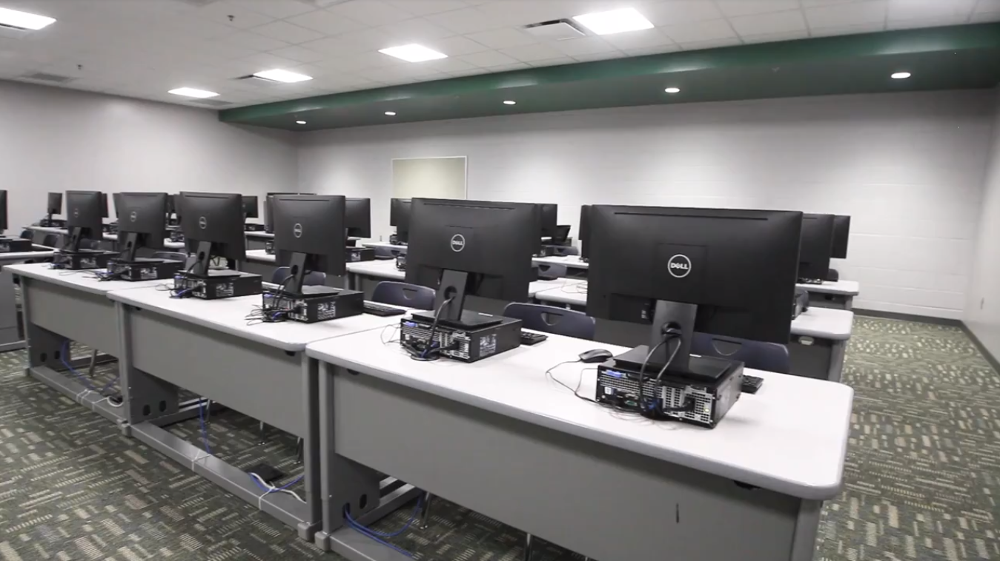
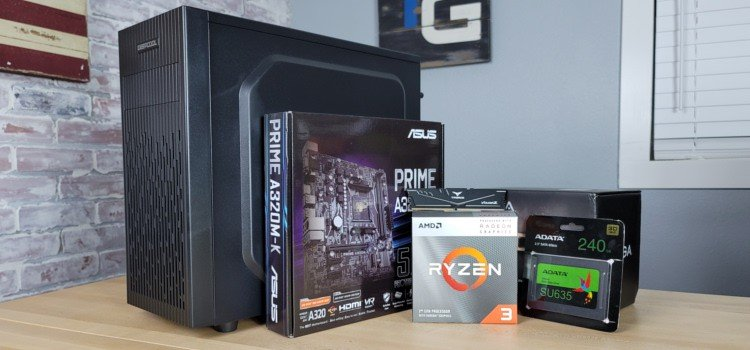

Consumer Build:
These aren't necessarily "builds" as they are store bought computers. These are the types of PC's you'd normally see in
a classroom or office setting. They are pretty standard and powerful enough to last many years and get a lot of work done with.
You can't really game with these computers (some you probably could) and are instead designed with work/school work in mind. You
could build a similar computer with gaming in mind for the future by buying diverse parts, or you could go to your local best
buy and find something similar. They are also relatively inexpensive.
 Gaming Build:
Gaming Build:
Gaming builds are a lot more custom. These PC’s can be built with productivity in mind, or just gaming, or both. It’s really up
to the user. You can buy pre built gaming PC’s which can be more cost effective than building a fully custom computer, but it
really depends on a lot of things like parts and the state of the current market. It can be really fun to custom build your
computer and get all the flashy parts you want, or you can build it to look normal still perform well. Aesthetics usually aren’t
correlated to performance.

Budget Build:
In a sense all builds are budget builds, however the name usually implies a specific price bracket. Budget builds involve a lot more
focus on parts than other builds, and they tend to be less future-proof. Budget gaming builds can often compete with
consoles in price to performance. Most of ones budget will often be put towards the GPU and the CPU, with the power of each depending on required tasks.
For more information on choosing parts, see
Parts Recommendations.
 Types of Builds
Types of Builds